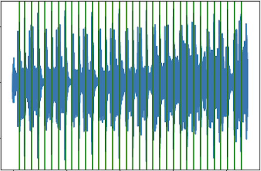
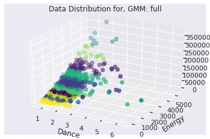
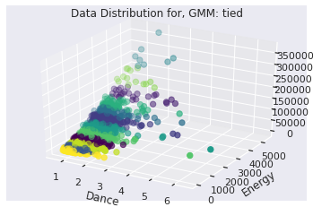
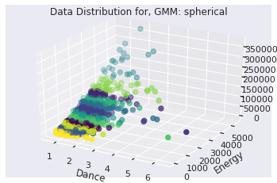
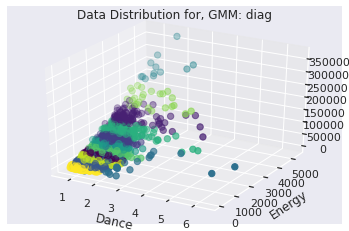
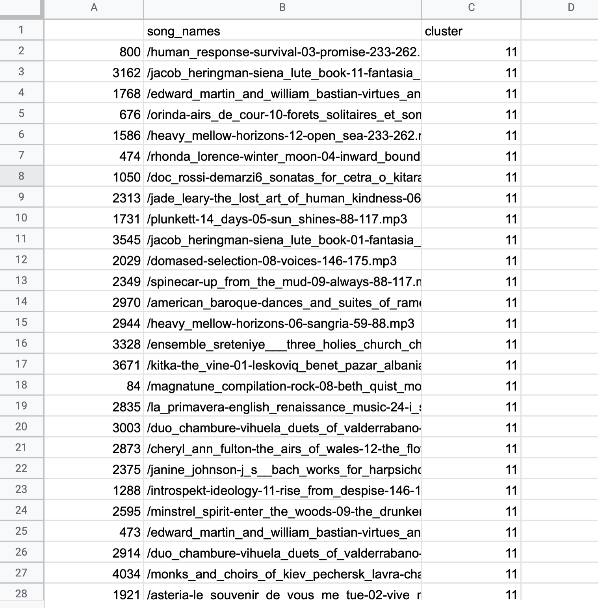
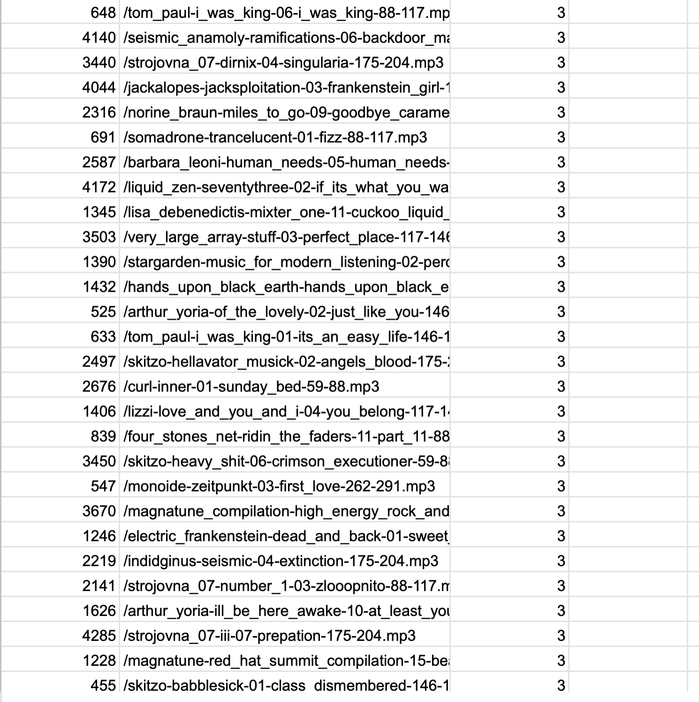
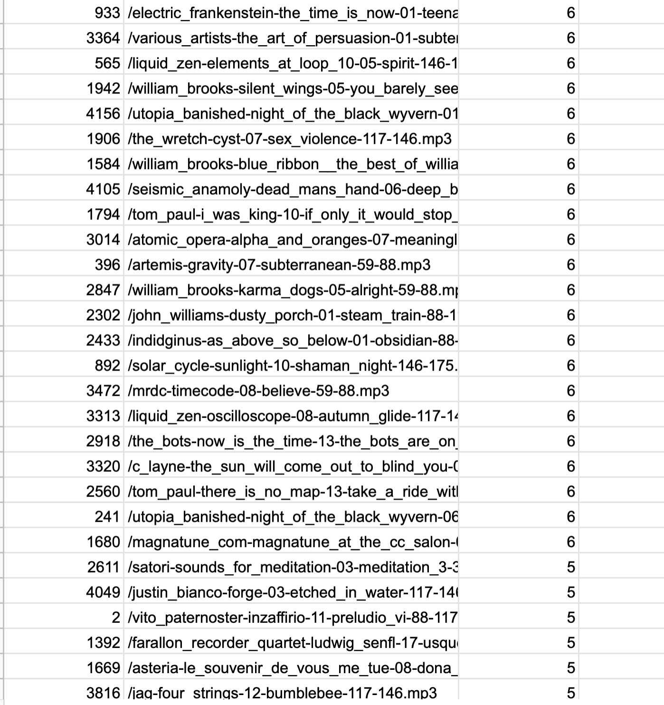

The Problem
Given a data set of 1,500 + songs how can we analyze the audio content of these songs to make recommendations for new songs from a second data base of 1,500+ songs. It was also not allowed to use any metadata (song name etc.) to sort or identify songs. With this large of a data base a secondary challenge was developing an analysis method that would keep the run time to a minimum. This was, as professor Visell intended, a very vague problem description where many different approaches and solutions where possible.
The Solution
By examining features such as beat, energy and loudness using the Essentia library I used a Gaussian Mixture Model (GMM) to group the first data base of songs into ten categories or “playlists” as I liked to think of them. Based on the parameters of these initial categories I was able to place the second grouping of songs into one of these ten groupings based on their audio characteristics. For example if you had a collection of country music, classical music and rap on your spotify this model would make recommendations of new songs for each genre.
About Gaussian Mixture Models
Gaussian Mixtures are ideal for this problem since they allow for unsupervised learning which is necessity given that we don’t know what is considered a correct classification. Since GMM is a probabilistic model that assumes all data points are generated from a mixture of finite number of Gaussian distributions it can clump the data into a defined number of groups. More specifically GMM works by creating ellipsoid functions around groupings of data and determining the likely hood that a point is contained in one data grouping over the other.
Lets Get To Coding
- First we need to load in the songs from our data base.
- Songs are loaded into a massive matrix using the Pandas library.
- Then we need to extract the four features that we have chosen from Essentia .
- Finally, the features extracted from many points within each song where apeanded to the row corresponding to each song and loaded into a csv file
- Using the csv file to save features after they where calculated was a huge time saving feature.
base_path = '/content/drive/Shared drives/ECE160-Visell-2020/Media Files/similarity_dataFolder'
#'/content/drive/My Drive/ECE160/Project3/music_sub'
#You'll need to change this path to reflect where the data is in your Drive
rhythm_extractor = es.RhythmExtractor2013(method="multifeature")
fs = 44100
file_names = glob.glob(os.path.join(base_path, '*mp3'))
a = []
song_list = []
feature_size = 0
num_songs = 0
length = len(base_path)
for song in file_names:
num_songs +=1
song_name = song[length:]
song_list.append(song_name)
audioSig = es.MonoLoader(filename=song,sampleRate=fs)()
#danceability: range from 0 to 3 for most danceable
dance= es.Danceability()
r,s = dance(audioSig)
a = np.append (a, r)
#print("Dance: ",r)
#energy: computes the energy of an array
energy= es.Energy()
a = np.append (a, energy(audioSig))
#print("Energy estimate:", energy(audioSig))
#loudness: computes loudness as the energy of the signal raised to the power of 0.67
loud= es.Loudness()
a = np.append (a, loud(audioSig))
#print("Loudness estimate:", loud(audioSig))
# centroid
cent= es.Centroid()
a = np.append (a, cent(audioSig))
#print("Centroid estimate:", cent(audioSig))
if (num_songs == 1):
feature_size = len(a)
a = a.reshape(num_songs,feature_size)
pd.DataFrame(song_list).to_csv("/content/drive/My Drive/ECE160/song_name.csv")
pd.DataFrame(a).to_csv("/content/drive/My Drive/ECE160/f300.csv")Building the Data Set and Reading CSV files
- Here we organize the data from our CSV file and randomize it into test and training sets.
- Keep in mind these are not the typical test and training sets since we won’t be able to measure the accuracy in a quantifiable manner. The two sets are more to simulate the real world applpications of this program.
def Build_Data_Set():
song_names = pd.read_csv("/content/drive/My Drive/ECE160/song_name.csv")
song_names.columns = ["ID","song"]
song_names=song_names.drop(columns=['ID'])
data_df = pd.read_csv("/content/drive/My Drive/ECE160/f2,500.csv")
data_df.columns = ['ID','dance','energy','loud','cent.']
data_df.insert(5, 'song_names', song_names)
data_df = data_df.reindex(np.random.permutation(data_df.index))
data_df = data_df.drop(columns=['ID'])
return data_dfPlotting Data
Note for our train and test split we do a 50:50 split. Typically the split is 70:30 however, we didn’t want to start excluding genres by reducing the size of the training data too much. Even when data is randomized in my experience things still tend to get “clumped” in certain areas. Here we initially plot a 2D graph in order to get a sense of how the data is distributed.
I also created a smaller data set to test the model on before applying the full data set.
### _________________HEY ____________________________________
### USE 150 for 300 sub set
### use 1250 for full set
##___________________________________________________________
data = Build_Data_Set()
index = 1250
X_train = data[:index ]
X_test = data[index:]
song_arr_test = X_test.loc[:,'song_names']
song_arr_train= X_train.loc[:,'song_names']
print (song_arr_train)
print (song_arr_test)
plt.figure(figsize=(7,7))
plt.scatter(data["dance"],data["loud"])
plt.xlabel('Dance')
plt.ylabel('Loud')
plt.title('Data Distribution')
plt.show()Testing and Training using Sklearn
Gaussian Mixture Types (sklearn)
Full: each component has its own general covariance matrix
Tied: all components share the same general covariance matrix
Diag: each component has its own diagonal covariance matrix
Spherical: each component has its own single variance
X_train = X_train.drop(columns=['song_names'])
X_test = X_test.drop(columns=['song_names'])
from sklearn.mixture import GaussianMixture
gmm = GaussianMixture(n_components=12, covariance_type='full', random_state=0).fit(X_train)
gmmt = GaussianMixture(n_components=12, covariance_type='tied', random_state=0).fit(X_train)
gmmd = GaussianMixture(n_components=12, covariance_type='diag', random_state=0).fit(X_train)
gmms = GaussianMixture(n_components=12, covariance_type='spherical', random_state=0).fit(X_train)
probs_train = gmm.predict_proba(X_train)
test = gmm.predict(X_test)
probs_test = gmm.predict_proba(X_test)
print("probs_train",probs_train[:20].round(3))
#print("probs_test", probs_test[:20].round(3))Plotting GMM Clusters for Test Data
The plots bellow display’s data points (individual songs) that are color coded based on the cluster they where assigned. This allows us to visualize the effect of different modifications to the GMM as described above as well as how the model is grouping the data. Ultimately we chose to use “full” for our actual song recommendations since there appeared to be very little variation between the models. I chose 12 categories based on previous research by (Berenzweig et al. 2004.)
fig = plt.figure()
ax = plt.axes(projection='3d')
plt.gca()
labels = gmm.fit(X_test).predict(X_test)
ax.scatter(X_test['dance'], X_test['loud'],X_test['energy'], c=labels, s=40, cmap='viridis', zorder=2)
plt.xlabel('Dance')
plt.ylabel('Energy')
plt.title('Data Distribution for, GMM: full')
fig = plt.figure()
ax = plt.axes(projection='3d')
plt.gca()
labels = gmmt.fit(X_test).predict(X_test)
ax.scatter(X_test['dance'], X_test['loud'],X_test['energy'], c=labels, s=40, cmap='viridis', zorder=2)
plt.xlabel('Dance')
plt.ylabel('Energy')
plt.title('Data Distribution for, GMM: tied')
fig = plt.figure()
ax = plt.axes(projection='3d')
plt.gca()
labels = gmmd.fit(X_test).predict(X_test)
ax.scatter(X_test['dance'], X_test['loud'],X_test['energy'], c=labels, s=40, cmap='viridis', zorder=2)
plt.xlabel('Dance')
plt.ylabel('Energy')
plt.title('Data Distribution for, GMM: diag')
fig = plt.figure()
ax = plt.axes(projection='3d')
plt.gca()
labels = gmms.fit(X_test).predict(X_test)
ax.scatter(X_test['dance'], X_test['loud'],X_test['energy'], c=labels, s=40, cmap='viridis', zorder=2)
plt.xlabel('Dance')
plt.ylabel('Energy')
plt.title('Data Distribution for, GMM: spherical')   
Appending the song recomendations to a csv file
lables_clusters = gmm.predict(X_train)
cluster_matrix = pd.DataFrame(lables_clusters)
song_train = pd.DataFrame(song_arr_train)
song_train.insert(1, 'clusters', lables_clusters)
song_train = song_train.sort_values(by=['clusters'],ascending=False)
print('Training Data')
print (song_train)
song_train.to_csv("/content/drive/My Drive/ECE160/song_train.csv")
lables = gmm.predict(X_test)
matrix = pd.DataFrame(lables)
song_test = pd.DataFrame(song_arr_test)
song_test.insert(1, 'clusters', lables)
song_test = song_test.sort_values(by=['clusters'],ascending=False)
print('Testing Data')
print (song_test)
song_test.to_csv("/content/drive/My Drive/ECE160/song_test.csv")Click the images to enlarge them


